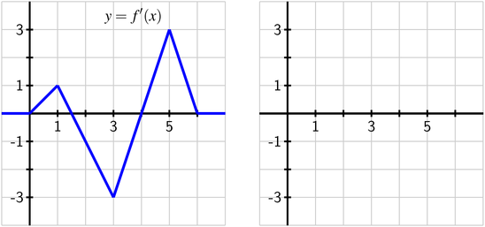
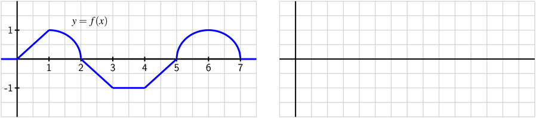
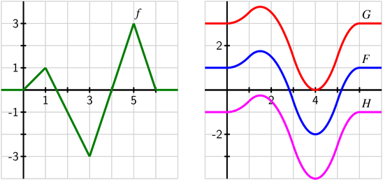
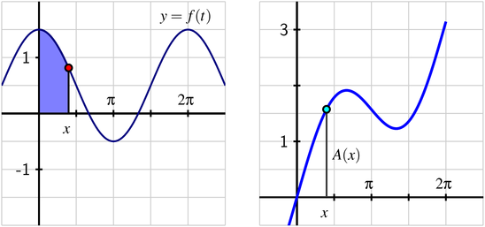
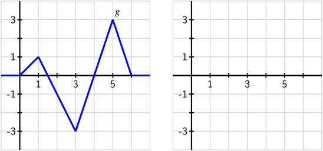
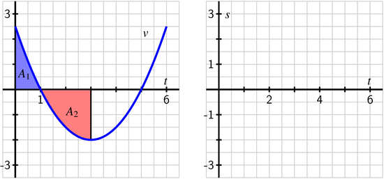
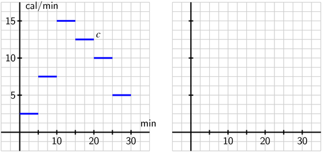
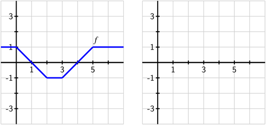

Section5.1Constructing Accurate Graphs of Antiderivatives¶ permalink
{In this section, we strive to understand the ideas generated by the following important questions:
Given the graph of a function's derivative, how can we construct a completely accurate graph of the original function?
How many antiderivatives does a given function have? What do those antiderivatives all have in common?
Given a function \(f\), how does the rule \(A(x) = \int_0^x f(t) \, dt\) define a new function \(A\)?
}
Subsection5.1.1Introduction
A recurring theme in our discussion of differential calculus has been the question “Given information about the derivative of an unknown function \(f\), how much information can we obtain about \(f\) itself?” For instance, in Activity 1.8.6, we explored the situation where the graph of \(y = f'(x)\) was known (along with the value of \(f\) at a single point) and endeavored to sketch a possible graph of \(f\) near the known point. In Example 3.1.4 – and indeed throughout Section 3.1 – we investigated how the first derivative test enables us to use information regarding \(f'\) to determine where the original function \(f\) is increasing and decreasing, as well as where \(f\) has relative extreme values. Further, if we know a formula or graph of \(f'\), by computing \(f''\) we can find where the original function \(f\) is concave up and concave down. Thus, the combination of knowing \(f'\) and \(f''\) enables us to fully understand the shape of the graph of \(f\).
We returned to this question in even more detail in Section 4.1; there, we considered the situation where we knew the instantaneous velocity of a moving object and worked from that information to determine as much information as possible about the object's position function. We found key connections between the net-signed area under the velocity function and the corresponding change in position of the function; in Section 4.4, the Total Change Theorem further illuminated these connections between \(f'\) and \(f\) in a more general setting, such as the one found in Figure 4.4.7, showing that the total change in the value of \(f\) over an interval \([a,b]\) is determined by the exact net-signed area bounded by \(f'\) and the \(x\)-axis on the same interval.
In what follows, we explore these issues still further, with a particular emphasis on the situation where we possess an accurate graph of the derivative function along with a single value of the function \(f\). From that information, we desire to completely determine an accurate graph of \(f\) that not only represents correctly where \(f\) is increasing, decreasing, concave up, and concave down, but also allows us to find an accurate function value at any point of interest to us.
Preview Activity
Suppose that the following information is known about a function \(f\): the graph of its derivative, \(y = f'(x)\), is given in Figure 5.1.1. Further, assume that \(f'\) is piecewise linear (as pictured) and that for \(x \le 0\) and \(x \ge 6\), \(f'(x) = 0\). Finally, it is given that \(f(0) = 1\).
Figure5.1.1At left, the graph of \(y = f'(x)\); at right, axes for plotting \(y = f(x)\).
On what interval(s) is \(f\) an increasing function? On what intervals is \(f\) decreasing?
On what interval(s) is \(f\) concave up? concave down?
At what point(s) does \(f\) have a relative minimum? a relative maximum?
Recall that the Total Change Theorem tells us that
\[
f(1) - f(0) = \int_0^1 f'(x) \, dx.
\]
What is the exact value of \(f(1)\)?
Use the given information and similar reasoning to that in (d) to determine the exact value of \(f(2)\), \(f(3)\), \(f(4)\), \(f(5)\), and \(f(6)\).
Based on your responses to all of the preceding questions, sketch a complete and accurate graph of \(y = f(x)\) on the axes provided, being sure to indicate the behavior of \(f\) for \(x \lt 0\) and \(x > 6\).
Subsection5.1.2Constructing the graph of an antiderivative
Preview Activity demonstrates that when we can find the exact area under a given graph on any given interval, it is possible to construct an accurate graph of the given function's antiderivative: that is, we can find a representation of a function whose derivative is the given one. While we have considered this question at different points throughout our study, it is important to note here that we now can determine not only the overall shape of the antiderivative, but also the actual height of the antiderivative at any point of interest.
Indeed, this is one key consequence of the Fundamental Theorem of Calculus: if we know a function \(f\) and wish to know information about its antiderivative, \(F\), provided that we have some starting point \(a\) for which we know the value of \(F(a)\), we can determine the value of \(F(b)\) via the definite integral. In particular, since \(F(b) - F(a) = \int_a^b f(x) \, dx\), it follows that
Moreover, in the discussion surrounding Figure 4.4.7, we made the observation that differences in heights of a function correspond to net-signed areas bounded by its derivative. Rephrasing this in terms of a given function \(f\) and its antiderivative \(F\), we observe that on an interval \([a,b]\),
differences in heights on the antiderivative (such as \(F(b) - F(a)\)) correspond to the net-signed area bounded by the original function on the interval \([a,b]\) (\(\int_a^b f(x) \, dx\)).
For example, say that \(f(x) = x^2\) and that we are interested in an antiderivative of \(f\) that satisfies \(F(1) = 2\). Thinking of \(a = 1\) and \(b = 2\) in Equation (5.1.1), it follows from the Fundamental Theorem of Calculus that
In this way, we see that if we are given a function \(f\) for which we can find the exact net-signed area bounded by \(f\) on a given interval, along with one value of a corresponding antiderivative \(F\), we can find any other value of \(F\) that we seek, and in this way construct a completely accurate graph of \(F\). We have two main options for finding the exact net-signed area: using the Fundamental Theorem of Calculus (which requires us to find an algebraic formula for an antiderivative of the given function \(f\)), or, in the case where \(f\) has nice geometric properties, finding net-signed areas through the use of known area formulas.
Suppose that the function \(y = f(x)\) is given by the graph shown in Figure 5.1.3, and that the pieces of \(f\) are either portions of lines or portions of circles. In addition, let \(F\) be an antiderivative of \(f\) and say that \(F(0) = -1\). Finally, assume that for \(x \le 0\) and \(x \ge 7\), \(f(x) = 0\).
Figure5.1.3At left, the graph of \(y = f(x)\).
On what interval(s) is \(F\) an increasing function? On what intervals is \(F\) decreasing?
On what interval(s) is \(F\) concave up? concave down? neither?
At what point(s) does \(F\) have a relative minimum? a relative maximum?
Use the given information to determine the exact value of \(F(x)\) for \(x = 1, 2, \ldots, 7\). In addition, what are the values of \(F(-1)\) and \(F(8)\)?
Based on your responses to all of the preceding questions, sketch a complete and accurate graph of \(y = F(x)\) on the axes provided, being sure to indicate the behavior of \(F\) for \(x \lt 0\) and \(x > 7\). Clearly indicate the scale on the vertical and horizontal axes of your graph.
What happens if we change one key piece of information: in particular, say that \(G\) is an antiderivative of \(f\) and \(G(0) = 0\). How (if at all) would your answers to the preceding questions change? Sketch a graph of \(G\) on the same axes as the graph of \(F\) you constructed in (e).
Consider the sign of \(F' = f\) and recall that wherever \(F' > 0\), \(F\) is increasing.
Consider the sign of \(F'' = f'\) and recall that wherever \(F''>0\), \(F\) is concave up. Note particularly that \(F''>0\) if and only if \(f\) is increasing.
Where does \(F' = f\) change sign? A relative maximum for \(F\) will occur wherever \(F'\) changes from positive to negative.
Use the function values found in (d) and the earlier information regarding the shape of \(F\).
Note that \(G(1) = G(0) + \int_0^1 f(t) \, dt\). Since \(G(0) = 0\) (while \(F(0) = -1\)), this changes each response in (e) by the same constant amount.
Wherever \(F' > 0\), \(F\) is increasing, so \(F\) is increasing on \((0,2)\) and \((5,7)\), while \(F\) is decreasing on \((2,5)\).
Wherever \(F''>0\), \(F\) is concave up; note particularly that \(F''>0\) if and only if \(f\) is increasing. Thus, \(F\) is concave up on \((0,1)\), \((4,6)\), and concave down on \((1,3)\), \((6,7)\), and neither on \((3,4)\).
A relative maximum for \(F\) will occur wherever \(F'\) changes from positive to negative, and thus at \(x = 2\); similarly, \(F\) has a relative minimum at \(x = 5\).
Recall that \(F(1) = F(0) + \int_0^1 f(t) \, dt\), so \(F(1) = -1 + \frac{1}{2} = -\frac{1}{2}\). Similarly, \(F(2) = F(0) + \int_0^1 f(t) \, dt = -1 + \frac{1}{2} + \frac{\pi}{4} = \frac{\pi}{4} - \frac{1}{2}\). Continuing these calculations, \(F(3) = \frac{\pi}{4} - 1\), \(F(4) = \frac{\pi}{4}-2\), \(F(5) = \frac{\pi}{4} - \frac{5}{2}\), \(F(6) = \frac{\pi}{2} - \frac{5}{2}\), \(F(7) = \frac{3\pi}{4} - \frac{5}{2}\). Furthermore, since \(f(t) = 0\) for all \(t \lt 0\) and all \(t > 7\), it follows \(F(8) = \frac{3\pi}{4} - \frac{5}{2}\) and \(F(-1) = -1\).
Use the function values found in (d) and the earlier information regarding the shape of \(F\).
Note that \(G(1) = G(0) + \int_0^1 f(t) \, dt\). Since \(G(0) = 0\) (while \(F(0) = -1\)), this changes each response in by 1: \(G(x) = F(x) + 1\).
Subsection5.1.3Multiple antiderivatives of a single function
In the final question of Activity 5.1.2, we encountered a very important idea: a given function \(f\) has more than one antiderivative. In addition, any antiderivative of \(f\) is determined uniquely by identifying the value of the desired antiderivative at a single point. For example, suppose that \(f\) is the function given at left in Figure 5.1.4,
Figure5.1.4At left, the graph of \(y = f(x)\). At right, three different antiderivatives of \(f\).
and we say that \(F\) is an antiderivative of \(f\) that satisfies \(F(0) = 1\).
Then, using Equation (5.1.1), we can compute \(F(1) = 1.5\), \(F(2) = 1.5\), \(F(3) = -0.5\), \(F(4) = -2\), \(F(5) = -0.5\), and \(F(6) = 1\), plus we can use the fact that \(F' = f\) to ascertain where \(F\) is increasing and decreasing, concave up and concave down, and has relative extremes and inflection points. Through work similar to what we encountered in Preview Activity and Activity 5.1.2, we ultimately find that the graph of \(F\) is the one given in blue in Figure 5.1.4.
If we instead chose to consider a function \(G\) that is an antiderivative of \(f\) but has the property that \(G(0) = 3\), then \(G\) will have the exact same shape as \(F\) (since both share the derivative \(f\)), but \(G\) will be shifted vertically away from the graph of \(F\), as pictured in red in Figure 5.1.4. Note that \(G(1) - G(0) = \int_0^1 f(x) \, dx = 0.5\), just as \(F(1) - F(0) = 0.5,\), but since \(G(0) = 3\), \(G(1) = G(0) + 0.5 = 3.5\), whereas \(F(1) = F(0) + 0.5 = 1.5\), since \(F(0) = 1\). In the same way, if we assigned a different initial value to the antiderivative, say \(H(0) = -1\), we would get still another antiderivative, as shown in magenta in Figure 5.1.4.
This example demonstrates an important fact that holds more generally:
{
If \(G\) and \(H\) are both antiderivatives of a function \(f\), then the function \(G - H\) must be constant.
}
To see why this result holds, observe that if \(G\) and \(H\) are both antiderivatives of \(f\), then \(G' = f\) and \(H' = f\). Hence, \(\frac{d}{dx}[ G(x) - H(x) ] = G'(x) - H'(x) = f(x) - f(x) = 0\). Since the only way a function can have derivative zero is by being a constant function, it follows that the function \(G - H\) must be constant.
Further, we now see that if a function has a single antiderivative, it must have infinitely many: we can add any constant of our choice to the antiderivative and get another antiderivative. For this reason, we sometimes refer to the general antiderivative \knownindex{\lt main>antiderivative\lt /main>\lt sub>general\lt /sub>} of a function \(f\). For example, if \(f(x) = x^2\), its general antiderivative is \(F(x) = \frac{1}{3}x^3 + C\), where we include the “\(+C\)” to indicate that \(F\) includes all of the possible antiderivatives of \(f\). To identify a particular antiderivative of \(f\), we must be provided a single value of the antiderivative \(F\) (this value is often called an initial condition\knownindex{\lt main>initial condition\lt /main>}). In the present example, suppose that condition is \(F(2) = 3\); substituting the value of 2 for \(x\) in \(F(x) = \frac{1}{3}x^3 + C\), we find that
\[
3 = \frac{1}{3}(2)^3 + C,
\]
and thus \(C = 3 - \frac{8}{3} = \frac{1}{3}\). Therefore, the particular antiderivative in this case is \(F(x) = \frac{1}{3}x^3 + \frac{1}{3}.\)
For each of the following functions, sketch an accurate graph of the antiderivative that satisfies the given initial condition. In addition, sketch the graph of two additional antiderivatives of the given function, and state the corresponding initial conditions that each of them satisfy. If possible, find an algebraic formula for the antiderivative that satisfies the initial condition.
original function: \(g(x) = \left| x \right| - 1\);
initial condition: \(G(-1) = 0\);
interval for sketch: \([-2,2]\)
original function: \(h(x) = \sin(x)\);
initial condition: \(H(0) = 1\);
interval for sketch: \([0,4\pi]\)
original function: \(p(x) =
\begin{cases}x^2, \amp \text{if } 0 \lt x \le 1 \\
-(x-2)^2, \amp \text{if } 1 \lt x \lt 2 \\
0 \amp \text{otherwise}
\end{cases}
\);
initial condition: \(P(0) = 1\);
interval for sketch: \([-1,3]\)
In Equation (5.1.1), we found an important rule that enables us to compute the value of the antiderivative \(F\) at a point \(b\), provided that we know \(F(a)\) and can evaluate the definite integral from \(a\) to \(b\) of \(f\). Again, that rule is
\[
F(b) = F(a) + \int_a^b f(x) \, dx.
\]
In several examples, we have used this formula to compute several different values of \(F(b)\) and then plotted the points \((b,F(b))\) to assist us in generating an accurate graph of \(F\). That suggests that we may want to think of \(b\), the upper limit of integration, as a variable itself. To that end, we introduce the idea of an integral function\knownindex{\lt main>integral function\lt /main>}, a function whose formula involves a definite integral.
Given a continuous function \(f\), we define the corresponding integral function \(A\) according to the rule
Note particularly that because we are using the variable \(x\) as the independent variable in the function \(A\), and \(x\) determines the other endpoint of the interval over which we integrate (starting from \(a\)), we need to use a variable other than \(x\) as the variable of integration. A standard choice is \(t\), but any variable other than \(x\) is acceptable.
One way to think of the function \(A\) is as the “net-signed area from \(a\) up to \(x\)” function, where we consider the region bounded by \(y = f(t)\) on the relevant interval. For example, in Figure 5.1.6, we see a given function \(f\) pictured at left, and its corresponding area function (choosing \(a = 0\)), \(A(x) = \int_0^x f(t) \, dt\) shown at right.
Figure5.1.6At left, the graph of the given function \(f\). At right, the area function \(A(x) = \int_0^x f(t) dt\).
Note particularly that the function \(A\) measures the net-signed area from \(t = 0\) to \(t = x\) bounded by the curve \(y = f(t)\); this value is then reported as the corresponding height on the graph of \(y = A(x)\). It is even more natural to think of this relationship between \(f\) and \(A\) dynamically. At \href{http://gvsu.edu/s/cz}{http://gvsu.edu/s/cz}, we find a java applet 1 David Austin, Grand Valley State University that brings the static picture in Figure 5.1.6 to life. There, the user can move the red point on the function \(f\) and see how the corresponding height changes at the light blue point on the graph of \(A\).
The choice of \(a\) is somewhat arbitrary. In the activity that follows, we explore how the value of \(a\) affects the graph of the integral function, as well as some additional related issues.
Suppose that \(g\) is given by the graph at left in Figure 5.1.8 and that \(A\) is the corresponding integral function defined by \(A(x) = \int_1^x g(t) \, dt\).
Figure5.1.8At left, the graph of \(y = g(t)\); at right, axes for plotting \(y = A(x)\), where \(A\) is defined by the formula \(A(x) = \int_1^x g(t) dt\).
On what interval(s) is \(A\) an increasing function? On what intervals is \(A\) decreasing? Why?
On what interval(s) do you think \(A\) is concave up? concave down? Why?
At what point(s) does \(A\) have a relative minimum? a relative maximum?
Use the given information to determine the exact values of \(A(0)\), \(A(1)\), \(A(2)\), \(A(3)\), \(A(4)\), \(A(5)\), and \(A(6)\).
Based on your responses to all of the preceding questions, sketch a complete and accurate graph of \(y = A(x)\) on the axes provided, being sure to indicate the behavior of \(A\) for \(x \lt 0\) and \(x > 6\).
How does the graph of \(B\) compare to \(A\) if \(B\) is instead defined by \(B(x) = \int_0^x g(t) \, dt\)?
Where is \(A\) accumulating positive signed area? Where is \(A\) accumulating negative signed area?
As \(A\) accumulates positive or negative signed area, where is the rate at which such area is accumulated increasing? Contrast, for instance, the behavior of \(A\) on the intervals \((0,1)\) and \((1,2)\).
Where does \(A\) change from accumulating positive signed area to accumulating negative signed area? From negative to positive?
Note, for instance, that \(A(2) = \int_1^2 g(t) \, dt\), \(A(0) = \int_1^0 g(t) \, dt\), and particularly that \(A(1) = \int_1^1 g(t) \, dt = 0\).
Use your work in (a)-(d) appropriately.
What is the value of \(B(0)\)? How does this compare to \(A02)\)? What if we compare \(B(1)\) and \(A(1)\)?
\(A\) is accumulating positive signed area wherever \(g\) is positive, and thus \(A\) is increasing on \((0,1.5)\), \((4,6)\); \(A\) is accumulating negative signed area and therefore decreasing wherever \(g\) is negative, which occurs on \((1.5,4)\).
Here we want to consider where \(A\) is changing at an increasing rate (concave up) or changing at a decreasing rate (concave down). On \((0,1)\) and \((4,5)\), \(A\) is increasing, and we can also see that since \(g\) is increasing, \(A\) is increasing at an increasing rate. Similarly, on \((3,4)\) (where \(g\) is negative so \(A\) is decreasing), since \(g\) is increasing it follows that \(A\) is decreasing at an increasing rate. Thus, \(A\) is concave up on \((0,1)\) and \((3,5)\). Analogous reasoning shows that \(A\) is concave down on \((1,3)\) and \((5,6)\).
Based on our work in (a), we see that \(A\) changes from increasing to decreasing at \(x = 1.5\), and thus \(A\) has a relative maximum there. Similarly, \(A\) has a relative minimum at \(x = 4\).
Using the fact that \(g\) is piecewise linear and the definition of \(A\), we find that \(A(0) = \int_1^0 g(t) \, dt = -\int_0^1 g(t) \, dt = -\frac{1}{2}\); \(A(1) = \int_1^1 g(t) \, dt = 0\); \(A(2) = \int_1^2 g(t) \, dt = 0\). Analogous reasoning shows that \(A(3) = -2\), \(A(4) = -3.5\), \(A(5) = -2\), \(A(6) = -0.5\).
Use your work in (a)-(d) appropriately.
Note that \(B(0) = 0\), while \(A(0) = -\frac{1}{2}\). Likewise, \(B(1) = \frac{1}{2}\), while \(A(1) = 0\). Indeed, we can see that for any value of \(x\), \(B(x) = A(x) + \frac{1}{2}\).
\item Given the graph of a function \(f\), we can construct the graph of its antiderivative \(F\) provided that (a) we know a starting value of \(F\), say \(F(a)\), and (b) we can evaluate the integral \(\int_a^b f(x) \, dx\) exactly for relevant choices of \(a\) and \(b\). For instance, if we wish to know \(F(3)\), we can compute \(F(3) = F(a) + \int_a^3 f(x) \, dx\). When we combine this information about the function values of \(F\) together with our understanding of how the behavior of \(F' = f\) affects the overall shape of \(F\), we can develop a completely accurate graph of the antiderivative \(F\).
\item Because the derivative of a constant is zero, if \(F\) is an antiderivative of \(f\), it follows that \(G(x) = F(x) + C\) will also be an antiderivative of \(f\). Moreover, any two antiderivatives of a function \(f\) differ precisely by a constant. Thus, any function with at least one antiderivative in fact has infinitely many, and the graphs of any two antiderivatives will differ only by a vertical translation.
\item Given a function \(f\), the rule \(A(x) = \int_a^x f(t) \, dt\) defines a new function \(A\) that measures the net-signed area bounded by \(f\) on the interval \([a,x]\). We call the function \(A\) the integral function corresponding to \(f\).
\hrulefill
\begin{exercises}
\item A moving particle has its velocity given by the quadratic function \(v\) pictured in Figure 5.1.9. In addition, it is given that \(A_1 = \frac{7}{6}\) and \(A_2 = \frac{8}{3}\), as well as that for the corresponding position function \(s\), \(s(0) = 0.5\).
Figure5.1.9At left, the given graph of \(v\). At right, axes for plotting \(s\).
Use the given information to determine \(s(1)\), \(s(3)\), \(s(5)\), and \(s(6)\).
On what interval(s) is \(s\) increasing? On what interval(s) is \(s\) decreasing?
On what interval(s) is \(s\) concave up? On what interval(s) is \(s\) concave down?
Sketch an accurate, labeled graph of \(s\) on the axes at right in Figure 5.1.9.
Note that \(v(t) = -2 + \frac{1}{2}(t-3)^2\). Find a formula for \(s\).
\item A person exercising on a treadmill experiences different levels of resistance and thus burns calories at different rates, depending on the treadmill's setting. In a particular workout, the rate at which a person is burning calories is given by the piecewise constant function \(c\) pictured in Figure 5.1.10. Note that the units on \(c\) are “calories per minute.”
Figure5.1.10At left, the given graph of \(c\). At right, axes for plotting \(C\).
Let \(C\) be an antiderivative of \(c\). What does the function \(C\) measure? What are its units?
Assume that \(C(0) = 0\). Determine the exact value of \(C(t)\) at the values \(t = 5, 10, 15, 20, 25, 30\).
Sketch an accurate graph of \(C\) on the axes provided at right in Figure 5.1.10. Be certain to label the scale on the vertical axis.
Determine a formula for \(C\) that does not involve an integral and is valid for \(5 \le t \le 10\).
\item Consider the piecewise linear function \(f\) given in Figure 5.1.11. Let the functions \(A\), \(B\), and \(C\) be defined by the rules \(A(x) = \int_{-1}^{x} f(t) \, dt\), \(B(x) = \int_{0}^{x} f(t) \, dt\), and \(C(x) = \int_{1}^{x} f(t) \, dt\).
Figure5.1.11At left, the given graph of \(f\). At right, axes for plotting \(A\), \(B\), and \(C\).
For the values \(x = -1, 0, 1, \ldots, 6\), make a table that lists corresponding values of \(A(x)\), \(B(x)\), and \(C(x)\).
On the axes provided in Figure 5.1.11, sketch the graphs of \(A\), \(B\), and \(C\).
How are the graphs of \(A\), \(B\), and \(C\) related?
How would you best describe the relationship between the function \(A\) and the function \(f\)?